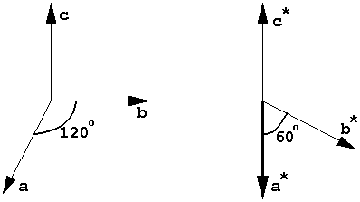

|
Basic Maths for Protein Crystallographers |
| Lattice geometry |
|
|
Diffraction from a crystal lattice is visible at discrete points conveniently indexed as an integer triple (h,k,l), or in vector notation as ha*+kb*+lc*, relative to the reciprocal lattice vectors a*,b*,c*. These are defined to have the properties
a*· a = b*· b = c*· c = 1 a*· b = a*· c = b*· c = 0
i.e. a* is perpendicular to b and c, and therefore parallel to b×c. E.g. in P31:

where c and c* lie vertically in the plane of the drawing, and a* comes perpendicularly out of the plane of the drawing.